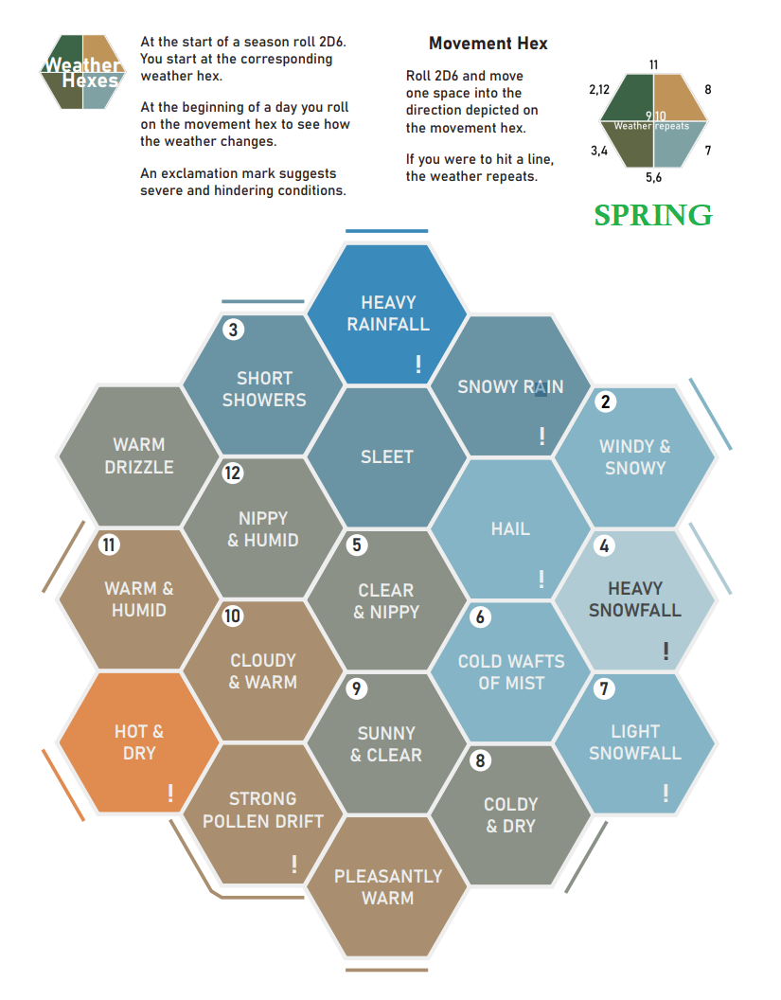
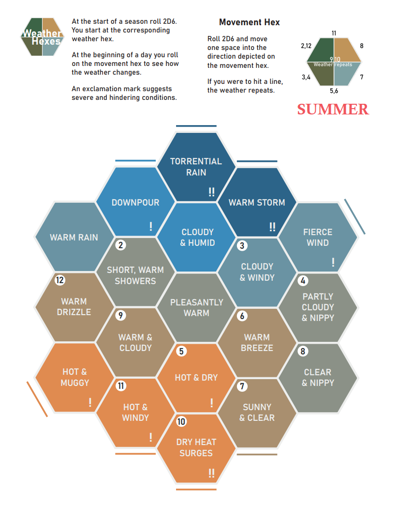
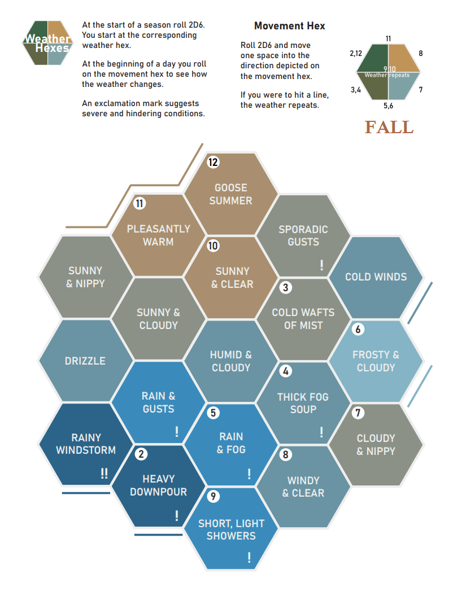
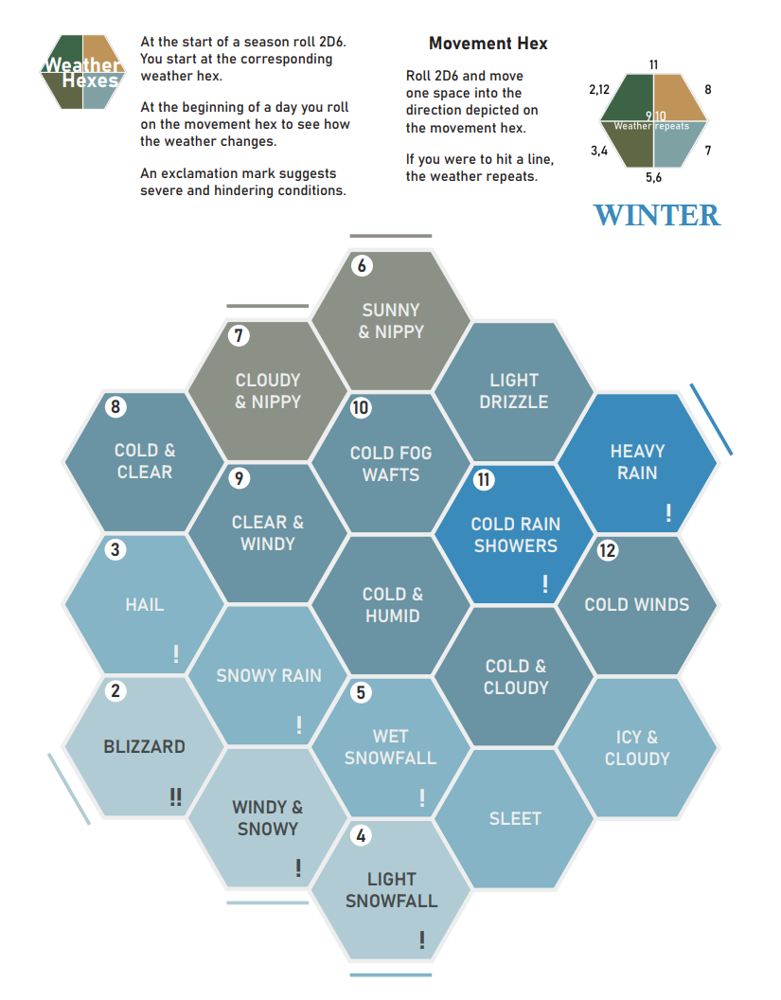
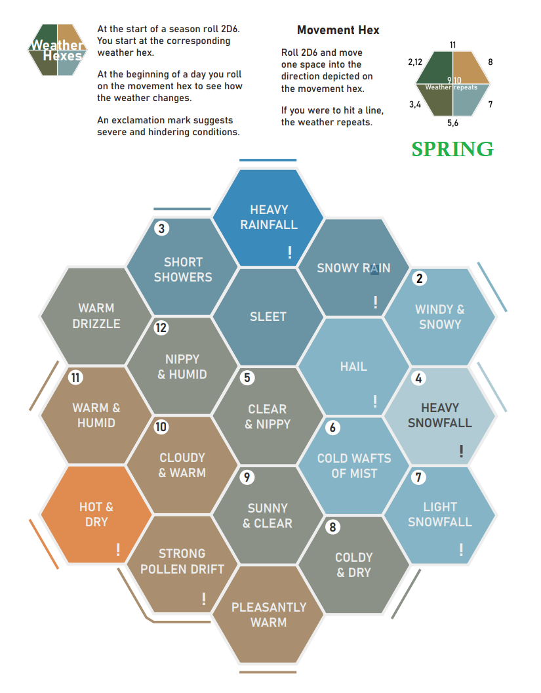
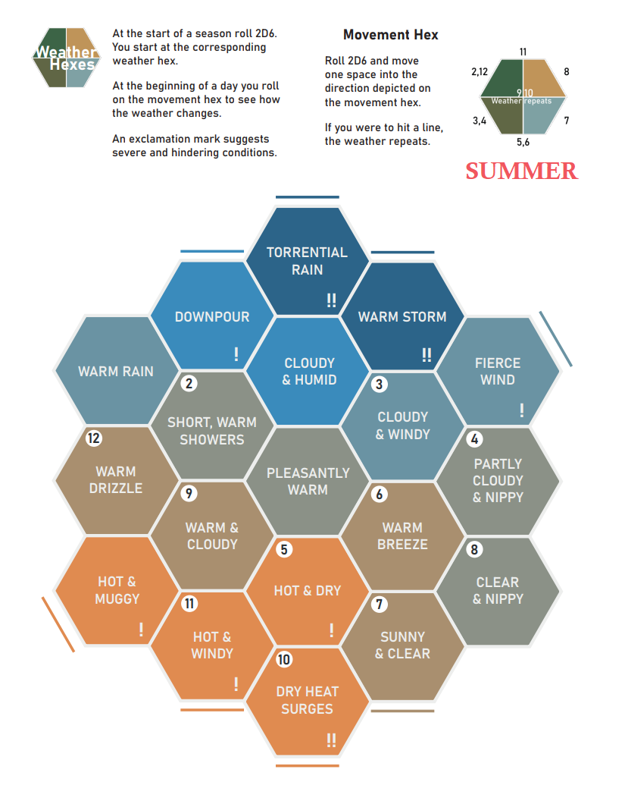
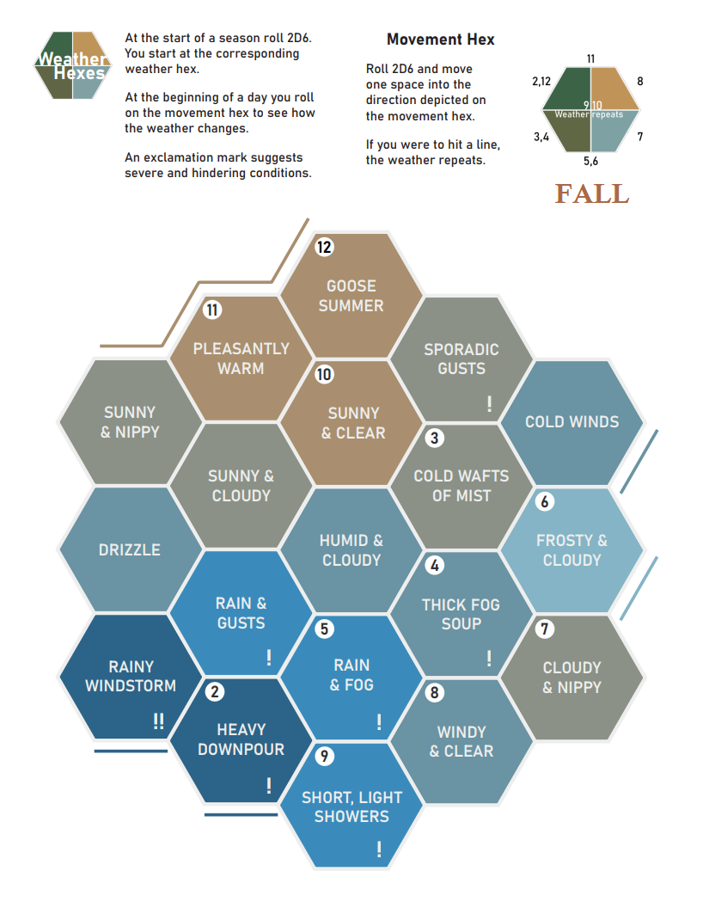
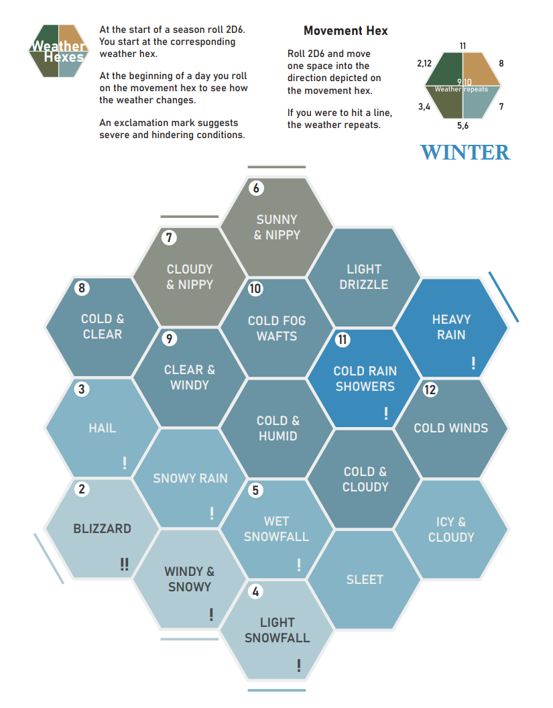

General RPG Links
Dungeon Solvers: Legendary Actions And Lair Actions
The Monsters Know What They're Doing
Archive Of Nethys (Pathfinder (2e))
PDF coding
qpdf --empty --pages source.pdf 4-6,8 -- new.pdf Extract pages from a PDF file.qpdf --empty --pages $(for i in *.pdf; do echo $i 1-z; done) -- new.pdf Merge all pdfs in a folder into one new PDF file.
pdfimages xxx.pdf ExtractedFilesBaseNameAndPath/ -png -p (-p is to include page number in file name) Extract images from a PDF file.
-[0-9]{3}-[0-9]{3} regex to use in FC multi-rename to remove page numbers from names of extracted jpg/png files.
convert image.png -page letter outfile.pdf Create a pdf file from (an) image(s). If not using "-page letter", then pdf page(s) will be the size of the image. If creating one PDF from many images which are of different dimensions, the output may not be as desired or expected when using "-page letter"
[python] pdfkit.from_file Create pdf from an html file how-to use custom font options
[python] ReportLab Create pdf from scratch tutorial user's guide
PRINT THESE
 







{kind=link}
{kind=link}
{kind=link}
{kind=link}
DICE
Martial Dice (also Skill Dice)
- 6 d20 red: Martial Pool attack dice / Skill Check Dice
- 6 d20 blue: Martial Pool active defense
OPPOSED ROLL DICE
- 4 d12 red: attacker (normally use 3, + 1 possible for advantage) TODO
- 4 d12 blue: defender (normally use 3, + 1 possible for advantage) TODO
Damage Dice
- 4 d3 (white)
- 4 d4 (sunburst)
- 6 d6 (sunburst)
- 6 d8 (vortex, orange/black)
- 8 d10 (scarab, scarlet)
- 8 d12 (scarab, blueblood)
Oracle Dice
- 2 d10 clear: pair of percentage dice for oracle
- 1 d20 clear: for yes/no modifier TODO
Story Dice
- Rory's story cubes
- Base Set
- Adventure Set
- Fantasia Set
- Actions Set
- Emergency Set (TODO)
- Primal Set (TODO)
Misc Dice
- 2 d6 Weather Hex (TODO)
- 1 d6 Investigation Resources (TODO)
- 1 d6 escalation die
- 3 df Fudge/Fate
- X d4-d20 Countdown series
CARDS
- Dungeon Deck from Inked Adventures, Etsy, from UK
- GM Apprentice Cards (base + fantasy expansion)
- Conversation Cards (for quick NPC reactions)
- Axebane's Deck Of Many Dungeons (TODO)